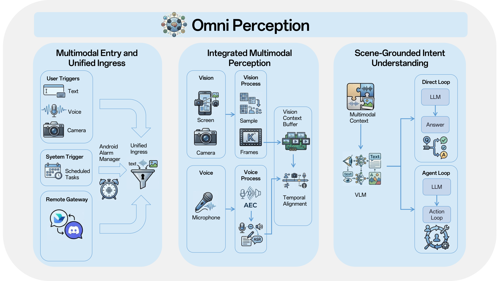

Omni Perception
As in the report (§3), perception is the system’s multimodal ingress: unified entry, integrated sensing, and scene-grounded intent before execution.

Multimodal entry and unified ingress. X-OmniClaw consolidates diverse inputs—direct UI triggers, floating widgets, microphone input, scheduled tasks, and external gateways—into one pipeline. For recurring on-device tasks, Android AlarmManager provides a system-level wake-up path so scheduled triggers merge back into the same entry semantics.
Integrated multimodal perception. The phone is modeled as a first-person multimodal system over on-screen UI, real-world camera context, and speech. Camera and screen projection supply visual evidence; ASR transcribes speech in real time; on-device AEC mitigates playback echo. A decoupled streaming pipeline buffers visual history, and a temporal alignment module aligns speech and video via timestamps.
Scene-grounded intent understanding. A VLM interprets the scene with the user query, expanding raw input into intent. Answerable questions return immediately; otherwise the structured intent is handed to the downstream agent loop.